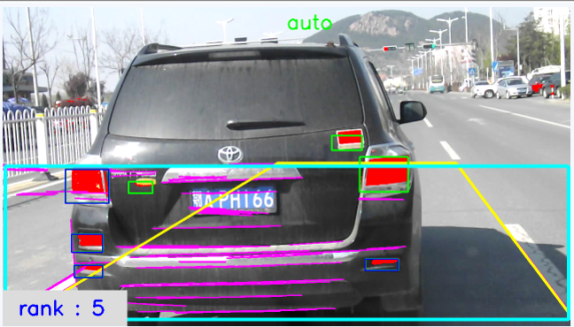

Basic Information
| Name： | Xiaowei Zhou |
|---|---|
| E-Mail： | Xiaowei.Zhou AT student.uts.edu.cn |
| github： | https://github.com/zxwedu |
| CSDN： | https://blog.csdn.net/zhouxiaowei1120 |
Biography
I am a Ph.D. Student at Centre for Artificial Intelligence (CAI), University of Technology Sydney (UTS) and Data61, CSIRO.
My research interests are mainly in the area of deep learning and machine learning.
Currently, my supervisors are Prof. Ivor Tsang
and Dr. Jessie Yin. I also work with Dr. Chen Wang.
Before this, I worked in XBENTURY, Beijing with Dr. Gao Huang (the author of DenseNet). I received the Master of Engineering and Bachelor of Engineering in Computer Science from Ocean University of China in 2017 and 2014, respectively. The head of Department of Computer Science and Technology, Prof. Junyu Dong, was my supervisor.
Project
Surface height map estimation from a single image based on deep learning

National Natural Science Foundation of China (NSFC) — Research on natural texture generation model and its visual perception mechanism
September 2015 — July 2016
We proposed a novel method based on convolutional neural networks (CNNs) for estimating the height map from a single image, without using any other equipment or extra prior knowledge of the image contents.
Project on Github: HeightEstimation The Related Paper: Surface height map estimation from a single image using convolutional neural networks
Research of Personnel Evacuation in Tsunami

Young Teacher Foundation of Ocean University of China — undergraduate graduation design
2 monthes, March 2014 — May 2014
The project is based on the tsunami simulation data generated by the Numerical model of COMCOT and high resolution remote sensing maps obtained by remote sensing satellites; We extracted road network from the map by MapInfo tools, solved the shortest path for crowd evacuation by Dijkstra algorithm, and finally established a tsunami personnel evacuation plan.
Project on Github: GraduDesign The Related Paper: Visual Simulation for Tsunami and Disaster Risk Assessment
Intelligent Monitor System Based on Vehicle

Student Research Developing Program of Ocean University of China
1 year, June 2012 — June 2013
The system is used for monitoring illegal behavior of the vehicle and detecting the congestion degree of roads.
Automatic object recognition system

National College Student Intelligent Design Competition
1 month, May 2015 — June 2015
We extracted features using Decaf. Then we trained online learning SVM using the features and recognized the image, corrected the recognized results artificially using DTW language model.
Selected Awards
activities
Blogs
- Server configuration for deep learning

- Basic knowledge of Machine Learning
- Understand GAN
- Tensorflow Summary
- Attention Mechanism
- Latest Works about Face Landmark Detection
- Instructions about Latex Beamer
- Technical Blogs about Remote Connection Between Windows and Linux
 Centre for Artificial Intelligence
Centre for Artificial Intelligence